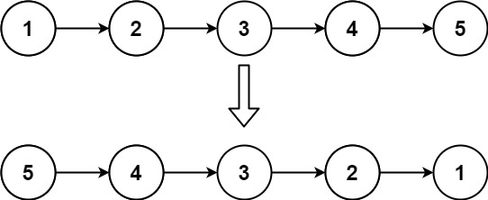
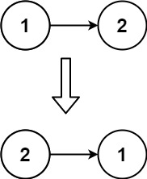

题面
给你单链表的头节点 head ，请你反转链表，并返回反转后的链表。
示例 1：

输入： head = [1,2,3,4,5]
输出：[5,4,3,2,1]示例 2：

输入： head = [1,2]
输出：[2,1]示例 3：
输入： head = []
输出：[]提示：
- 链表中节点的数目范围是
[0, 5000] -5000 <= Node.val <= 5000
进阶： 链表可以选用迭代或递归方式完成反转。你能否用两种方法解决这道题？
解法一 迭代
思路
- 逐个把每个节点的
next指针掉头，指向前一个节点 - 循环体 4 步：
tmp = cur.next：先存下一个节点（马上要断链）cur.next = pre：反转指针，指向前一个pre = cur：pre 往前挪cur = tmp：cur 往前挪
- 为什么
pre初始是 None？原来的头节点反转后变尾节点，尾节点的 next 应该是 None - 为什么返回
pre不是cur？循环结束时cur已经是 None（走出链表了），pre才是最后一个实际节点 = 反转后的新头
代码实现
struct ListNode {
int val;
ListNode *next;
ListNode() : val(0), next(nullptr) {}
ListNode(int x) : val(x), next(nullptr) {}
ListNode(int x, ListNode *next) : val(x), next(next) {}
};
class Solution:
def reverseList(self, head: Optional[ListNode]) -> Optional[ListNode]:
cur, pre = head, None
while cur:
tmp = cur.next
cur.next = pre
pre = cur
cur = tmp
return pre- 复杂度：时间 O(n)，空间 O(1)
解法二 递归
思路
- 本质和迭代完全一样，只是用函数调用栈代替 while 循环
recur(cur, pre)的含义：反转从 cur 开始的链表，cur 反转后应指向 pre- 递归调用
recur(cur.next, cur)就是迭代里的"往前走一步"： cur.next→ 下一个节点变成新的 curcur→ 当前节点变成新的 pre（下一个节点反转后应指向我）- 如果写成
recur(cur, pre)参数不变，就是原地不动无限递归了，所以必须传入下一步的状态 - 先递到链表末尾拿到新头节点，回溯时逐个反转指针（从尾到头）
- 理解递归的技巧：不要展开调用栈，只想"当前这一层做什么"——假设
recur(cur.next, cur)已经把后面全反转好了，我只需要做cur.next = pre - 易错点：
- `cur is None` 不是 `cur in None`：
is判断是否为 None，in是检查容器包含关系，写成in会报TypeError: argument of type 'NoneType' is not iterable - 别忘了 `return recur(head, None)`：外层函数必须 return 递归结果，否则返回 None
- `cur.next = pre` 必须放在递归调用之后：递归调用需要
cur.next还是原始的下一个节点，如果先改了就找不到下一个了
代码实现
class Solution:
def reverseList(self, head: Optional[ListNode]) -> Optional[ListNode]:
def recur(cur, pre):
if cur is None:
return pre
res = recur(cur.next, cur)
cur.next = pre
return res
return recur(head, None)- 复杂度：时间 O(n)，空间 O(n)（递归调用栈深度）